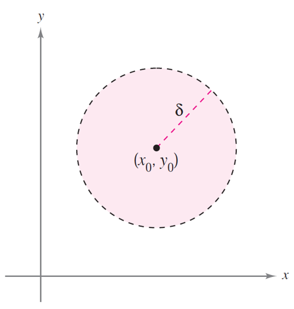
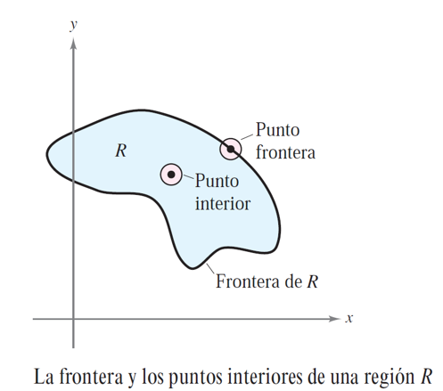
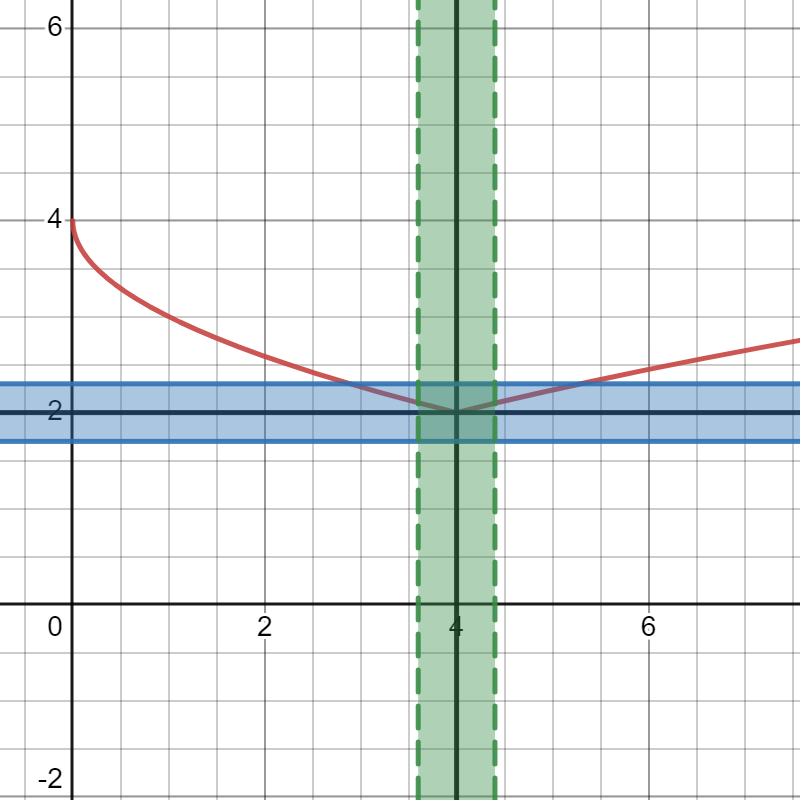
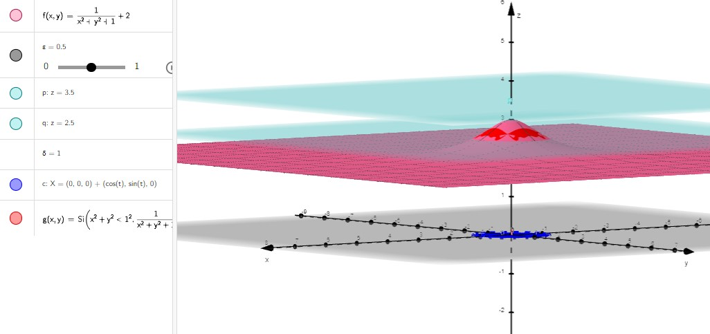
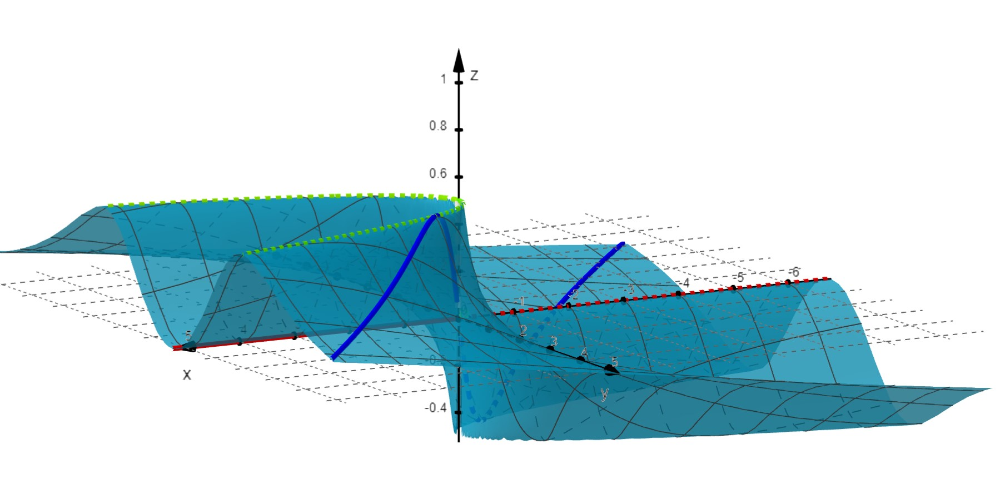
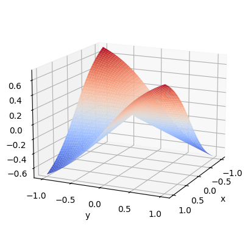

2.2. Límites#
Esta sección está destinada fundamentalmente al cálculo de límites en dos variables. Cabe señalar que este concepto está relacionado con el concepto de continuidad, y por tanto será utilizado en la siguiente sección. Nótese que ambos conceptos deben ser conocidos para el caso unidimensional (es decir, para funciones reales de variable real), y en esta sección se hace una extensión al caso bidimensional del concepto de límite. La generalización a más variables resultaría natural.
2.2.1. Entornos en el plano#
Antes de abordar el concepto de límite de una función de dos variables, es necesario introducir el concepto de entorno para el caso bidimensional. Nótese que este concepto debe ser conocido para el caso unidimensional (\(\mathbb{R}\)), en cuyo caso se corresponde con los intervalos centrados. En \(\mathbb{R}^2\), el entorno (abierto) alrededor de \((x_0,y_0)\in \mathbb{R}^2\) y de radio \(\delta>0\) se define como el conjunto de puntos del plano cuya distancia a \((x_0,y_0)\) es menor que \(\delta\). Por tanto, se corresponde con el llamado disco (abierto) centrado en \((x_0,y_0)\) y con radio \(\delta\):
Definition (Disco abierto)
El disco abierto de centro \((x_0,y_0)\in \mathbb{R}^2\) y radio \(\delta>0\) es el conjunto:
{kind=link}

De forma análoga al caso unidimensional (para los intervalos/entornos), decimos que el disco/entorno es cerrado cuando la desigualdad que lo define no es estricta, es decir, cuando es \(\leq\) y por tanto incluye a los puntos que están en la circunferencia correspondiente.
Utilizando el concepto de entorno, podemos clasificar puntos y conjuntos en el plano. En concreto, consideramos \(R\subset \mathbb{R}^2\) una región arbitraria del plano y \((x_0,y_0)\in \mathbb{R}^2\) un punto arbitrario del plano,
Decimos que \((x_0,y_0)\) es un punto interior de \(R\) si existe un entorno centrado en \((x_0,y_0)\) totalmente contenido en \(R\) (como se muestra en la figura):
\[ (x_0,y_0) \textrm{ es un punto interior de }R\Leftrightarrow \Big[ \exists\delta > 0 \, \Big{/}\, D_\delta(x_0,y_0)\subset R \Big] \]Nota: De la definición se deduce que todo punto interior de \(R\) está en \(R\).
Decimos que \(R\) es una región abierta si todos sus puntos son interiores.
Decimos que \((x_0,y_0)\) es un punto frontera de \(R\) si todo entorno centrado en \((x_0,y_0)\) tiene puntos que están dentro y fuera de \(R\):
\[ (x_0,y_0) \textrm{ es un punto frontera de }R \Leftrightarrow \Big[ R\cap D_\delta(x_0,y_0)\neq \emptyset \textrm{ y }(\mathbb{R}^2\backslash R)\cap D_\delta(x_0,y_0)\neq \emptyset\Big],\]para todo \(\delta>0\).
Nota: los puntos frontera de \(R\) pueden estar o no en \(R\) (dependiendo de la región).
Decimos que \(R\) es una región cerrada si contiene a todos sus puntos frontera.
{kind=link}

2.2.2. Definición de límite para una función de dos variables#
Antes de nada, vamos a recordar lo que quiere decir, en funciones de una variable, que
En este caso, la definición formal de Weierstrass, llamada de épsilon-delta, dice que si fijamos cualquier distancia \(\varepsilon\), alrededor de \(l\), existe otra distancia, \(\delta\), alrededor de \(x_{0}\), de forma que si tomamos \(x\) a una distancia de \(x_{0}\) menor que \(\delta\) (es decir, en el intervalo verde en la imagen que sigue), entonces \(f(x)\) estará a una distancia de \(l\) menor que \(\varepsilon\) (en el intervalo azul).
{kind=link}

Puedes verla en detalle
en la wikipedia: https://es.wikipedia.org/wiki/Límite_de_una_función,
o en el JB análogo a éste pero para funciones de una sola variable: https://gei-cal.github.io/JB-Calculo1-UDC/capitulos/02/04.Limites.html.
La extensión a funciones de dos variables es muy sencilla. En lugar de un intervalo alrededor de \(x_{0}\) tendremos un disco alrededor de \(\left(x_{0}, y_{0}\right)\) y el resto es idéntico, como vemos en la siguiente definición.
Definition (Límite de una función de dos variables)
Sea \(f\) una función de dos variables definida, al menos, en un disco abierto centrado en \((x_0,y_0)\) excepto, posiblemente, en \((x_0,y_0)\), y sea \(L\) un número real. Decimos que el límite de \(f\) en \((x_0,y_0)\) es \(L\) y escribimos
si para cada número real \(\varepsilon>0\) existe un número real \(\delta>0\) tal que
Gráficamente, esta condición implica que el valor de \(f(x,y)\) se encuentra entre los planos \(z = L-\varepsilon\) y \(z = L+\varepsilon\) para todo punto \((x,y)\neq (x_0,y_0)\) del disco centrado en \((x_0,y_0)\) y de radio \(\delta\), como podemos ver en esta aplicación de Geogebra de silvina.
{kind=link}

Nota: Decimos que el límite de \(f\) en \((x_0,y_0)\) es \(+\infty\) si la función crece ‘‘indefinidamente’’ (sin cota superior) al acercarse las variables a \((x_0,y_0)\). Análogamente, decimos que el límite de \(f\) en \((x_0,y_0)\) es \(-\infty\) si la función decrece ‘‘indefinidamente’’ (sin cota inferior) al acercarse las variables a \((x_0,y_0)\).
Remark
El concepto de límite de una función de dos variables es el mismo que el de una función de una variable (se analiza la tendencia de la función al aproximarnos a un punto sea cual sea la dirección), y también lo son sus propiedades con respecto a sumas, diferencias, productos y cocientes.
Sin embargo, hay una característica crítica asociada a la dimensión que marca la diferencia:
En el caso 1D sólo nos podemos aproximar a un punto por dos direcciones: derecha o izquierda. Por eso en este caso es suficiente con analizar los dos límites laterales (la tendencia de la función por la derecha y por la izquierda), y concluir que el límite existe y toma ese valor si y solo si ambos límites laterales coinciden.
Sin embargo, en 2D, hay infinitas maneras de aproximarse a un punto \((x_0,y_0)\) del plano.
Hablaremos entonces de aproximaciones por rectas, por parábolas, por trayectos paralelos a los ejes,… Pero estos resultados serán siempre negativos: si dos de estos caminos dan resultados diferentes quiere decir que no existe límite.
El resultado positivo (Sí existe límite) sólo se podrá establecer, en general, realizando un cambio de variable a coordenadas polares.
2.2.3. Cálculo de límites#
A continuación, veremos algunas de las técnicas más usuales para
saber cuándo no existe límite de una función de dos variables,
saber cuándo sí existe y cuánto vale dicho límite.
Property (Límite por rectas)
Teniendo en cuenta que una recta genérica que pasa por \(\left( x_{0}, y_{0}\right)\) tiene la ecuación \(y=y_{0} + m \left(x-x_{0}\right)\), si el resultado de
depende de \(m\), podemos concluir que \(\displaystyle\not\exists \lim\limits_{(x,y)\rightarrow (x_0,y_0)}\,f(x,y)\).
Nota: Los límites restringidos a rectas se llaman límites direccionales.
Property (Límite por parábolas)
Teniendo en cuenta que una parábola genérica que pasa por \(\left( x_{0}, y_{0}\right)\) tiene la ecuación \(y=y_{0} + m \left(x-x_{0}\right)^2\), si el resultado de
depende de \(m\), podemos concluir que \(\displaystyle \not\exists \lim\limits_{(x,y)\rightarrow (x_0,y_0)}\,f(x,y)\).
Property
Si los límites iterados
no coinciden, podemos concluir que \(\displaystyle\not\exists \lim\limits_{(x,y)\rightarrow (x_0,y_0)}\,f(x,y)\).
Por supuesto, estas posibilidades no agotan las opciones. Vamos a pensar en un ejemplo:
Example
Comprueba que no existe límite en \((0,0)\) para la función
Si lo haces por rectas, parábolas o iterados siempre obtendrás el mismo resultado: \(0\).
Sin embargo, elige \(y=m\sqrt{x}\) y verás que el resultado depende de \(m\), por lo que podemos concluir que no existe el límite.
Tenemos este caso gráficamente en la aplicación de Geogebra, desarrollada por Carmen Blanco del Prado, https://www.geogebra.org/m/urfz8pad, de la que extraemos la siguiente imagen:
{kind=link}

Como vemos (y ya hemos apuntado), las tres propiedades anteriores son criterios negativos: sólo nos permiten afirmar que no existe límite.
El único procedimiento que nos permite asegurar la existencia del límite de una función de dos variables consiste en utilizar las coordenadas polares en el límite y aplicar el criterio de la función mayorante. ¡Vamos con este último (en el caso particular en el que el punto de aproximación sea el origen de coordenadas, \((x_0,y_0)=(0,0)\))!
Theorem
Una condición necesaria y suficiente para que
es que exista una función \(H(r)\) (independiente de \(\theta\)) tal que
\(\displaystyle \left| f(r\cos\theta,r\,\textrm{sen}\,\theta)-L \right| \leq H(r)\), y
\(\displaystyle \lim\limits_{r\rightarrow 0^+}\,H(r)=0\).
Nota: Este prodecimiento se puede generalizar de forma natural para un punto de aproximación en el límite arbitrario \((x_0,y_0)\in \mathbb{R}^2\) aplicando el cambio de coordenadas polares con origen en dicho punto:
La aplicación más habitual del anterior teorema es la siguiente:
Property
Sea \(f:D\subset \mathbb{R}^2\longrightarrow \mathbb{R}\) y \((x_0,y_0)=(0,0)\).
Si \(\displaystyle f(r\cos\theta,r\,\textrm{sen}\,\theta)\equiv F(r)\) (independiente de \(\theta\)) \(\displaystyle \Rightarrow\lim\limits_{(x,y)\to (0,0)}\,f(x,y)=\lim\limits_{r\to 0^+}F(r)\).
Si \(\displaystyle\lim\limits_{r\to 0^+}\,f(r\cos\theta,r\,\textrm{sen}\,\theta)\) depende de \(\theta\) \(\displaystyle\Rightarrow\not\exists\lim\limits_{(x,y)\to (0,0)}\,f(x,y)\).
¡Cuidado! Como el cambio a polares es lo único que nos puede dar una solución definitiva, tendremos la tentación de pasar de todo lo anterior y hacer directamente ese cambio. La realidad es que, cuando el límite no existe, suele ser mucho más difícil verlo en polares que por rectas, parábolas o límites iterados.
2.2.4. Algunos ejemplos de límites con Python#
Analizamos a continuación dos límites en dos variables aplicando las técnicas expuestas y haciendo uso de la librería Sympy de Python que nos permite calcular límites de funciones que dependen de una única variable a través de la función sp.limit.
Vamos a aplicarlo al caso, comentado en la subsección anterior, del límite
que, como ya hemos visto, no existe.
¡Vamos a comprobarlo, ayudados por Sympy!
… pero observa que Sympy olvida un caso clave en el cambio a polares.
Como ya dijimos, no es tan fácil ver que no existe límite en coordenadas polares… ¡ni siquiera para #sympyelinfalible!
import sympy as sp
x, y = sp.symbols('x y', real=True) # definimos las variables simbólicas
f = sp.Lambda( (x,y), x*y**2/(x**2+y**4) ) # definimos la función
# calculamos el límite a través de rectas
m = sp.Symbol('m', real=True)
print('Límites direccionales: ', sp.limit(f(x,m*x),x,0)) # todos valen 0
# calculamos el límite a través de parábolas
print('Límites por parábolas:', sp.limit(f(x,m*x**2),x,0)) # todos valen 0
# calculamos los límites iterados (coinciden aunque en este caso no existe el límite)
fy = sp.limit(f(x,y),x,0)
print('Límite iterado empezando en x: ', sp.limit(fy,y,0))
fx = sp.limit(f(x,y),y,0)
print('Límite iterado empezando en y: ', sp.limit(fx,x,0))
# calculamos el límite en coordenadas polares
r = sp.Symbol('r', nonnegative=True)
theta = sp.Symbol('theta', real=True)
fpol = f(r*sp.cos(theta), r*sp.sin(theta))
display('Función en polares: ', sp.simplify(fpol))
print('Límite en polares: ', sp.simplify(sp.limit(fpol,r,0,dir='+')))
# restringidos a semirectas valen 0
# calculamos el límite restringido a la curva y=sqrt(x)
print('Límite restringido a y=sqrt(x):', sp.simplify( sp.limit( f(x,sp.sqrt(x)),x,0 ) ) )
# el límite no existe, depende del camino
Límites direccionales: 0
Límites por parábolas: 0
Límite iterado empezando en x: 0
Límite iterado empezando en y: 0
'Función en polares: '
Límite en polares: 0
Límite restringido a y=sqrt(x): 1/2
Por tanto, el límite no existe porque depende del camino.
Como segundo ejemplo, vamos a estudiar el límite
que resolvemos de la siguiente manera:
import sympy as sp
x, y = sp.symbols('x y', real=True) # definimos las variables simbólicas
f = sp.Lambda( (x,y), x*y/sp.sqrt(x**2+y**2) ) # definimos la función
# calculamos el límite a través de rectas
m = sp.Symbol('m', real=True)
print('Límites direccionales:', sp.limit(f(x,m*x),x,0)) # todos valen 0
# calculamos el límite a través de parábolas
print('Límites por parábolas:', sp.limit(f(x,m*x**2),x,0)) # todos valen 0
# calculamos los límites iterados
fy = sp.limit( f(x,y),x,0 )
print('Límite iterado empezando en x: ', sp.limit(fy,y,0))
fx = sp.limit( f(x,y),y,0 )
print('Límite iterado empezando en y: ', sp.limit(fy,x,0))
# calculamos el límite en coordenadas polares
r = sp.Symbol('r', nonnegative=True)
theta = sp.Symbol('theta', real=True)
fpol = f(r*sp.cos(theta), r*sp.sin(theta) )
display('Función en polares:', sp.simplify(fpol) )
# el límite es 0, Caso II del cálculo en polares
print('Límite en polares:', sp.simplify( sp.limit( fpol,r,0,dir='+' ) ) )
# restringidos a semirectas valen 0
Límites direccionales: 0
Límites por parábolas: 0
Límite iterado empezando en x: 0
Límite iterado empezando en y: 0
'Función en polares:'
Límite en polares: 0
En este caso, existe el límite y vale \(0\) porque el término del límite, en coordenadas polares, está compuesto por un producto de dos factores, uno de ellos que depende únicamente de \(r\) (de hecho, es \(r\)) y que tiende a \(0\), y el otro que depende únicamente de \(\theta\) y está acotado (\(\textrm{sen}(2\theta)/2\)).
Vamos a visualizar esta función:
import numpy as np
import sympy as sp
import matplotlib as mp
import matplotlib.pyplot as plt
from matplotlib import cm
%matplotlib inline
x, y = sp.symbols( 'x y', real=True ) # definimos las variables simbólicas
f = sp.Lambda( (x,y) , x*y/sp.sqrt(x**2+y**2) ) # definimos la función
# Inicialización de la representación 3D
fig = plt.figure()
ax = plt.axes(projection="3d")
fn= sp.lambdify( (x,y) , f(x,y) , "numpy" ) # función numpy de f
# Creación de la nube de puntos (50 puntos en cada eje, x e y)
xx = np.linspace(-1, 1, 50)
yy = np.linspace(-1, 1, 50)
X, Y = np.meshgrid(xx, yy)
Z = fn(X,Y)
# Representación de la superficie
surf = ax.plot_surface(X, Y, Z, cmap=cm.coolwarm)
# Etiquetas de los ejes
ax.set_xlabel('x')
ax.set_ylabel('y')
ax.set_zlabel('z')
# Orientamos los ejes
ax.azim = 25
ax.elev = 15
plt.show()

2.2.5. Más información#
Si te has quedado con ganas de saber más sobre límites de funciones de dos variables, te recomendamos el siguiente artículo, en la Gaceta de la Real Sociedad Matemática Española, escrito por Juan Bosco y Óscar López Pouso, profesores de la Universidade de Santiago de Compostela: https://gaceta.rsme.es/abrir.php?id=85